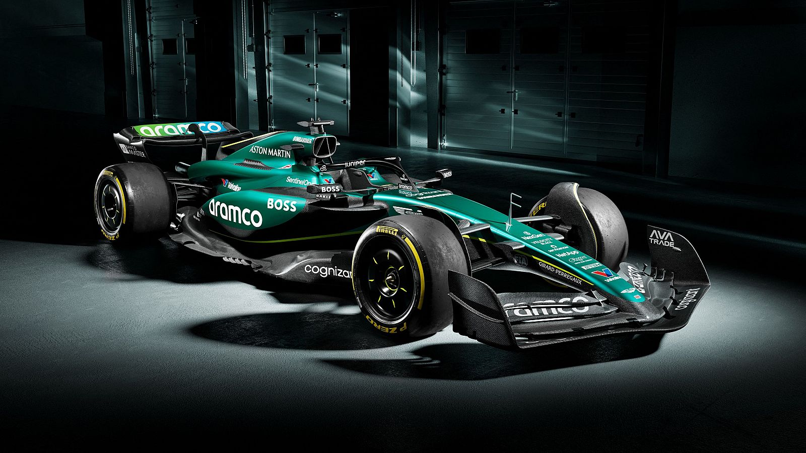
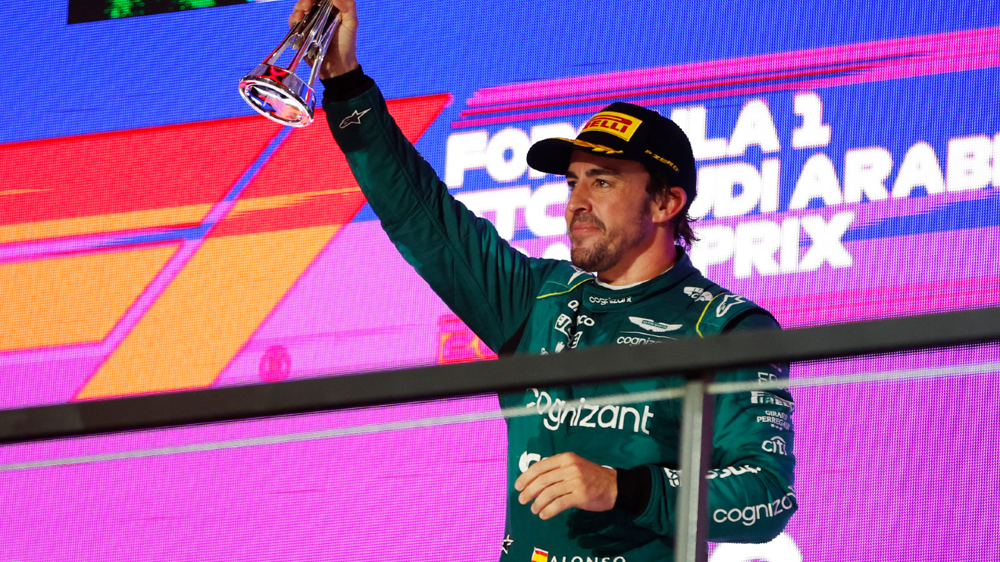

Aston Martin es un equipo privado de origen británico con sede en Silverstone, Gran Bretaña. Es propiedad de un consorcio de inversores, encabezado por el multimillonario Lawrence Stroll. La escudería ya compitió como equipo de la Fórmula 1 oficialmente entre las temporadas 1959 y 1960. Sin embargo, solamente disputaron cinco carreras entre ambas temporadas, sin sumar puntos en ninguna de ellas. Fue a partir de ese momento, cuando la escudería decidió desentenderse por completo de la competición, aunque siguieron participando en otras categorías automovilísticas, entre las que destacan varias victorias en las 24 Horas de Le Mans. No volverían a interesarse por la F1 hasta mucho tiempo después.
A raíz de una dura crisis económica, la escudería Force India vendió su equipo a un consorcio de inversores liderado por Lawrence Stroll, empresario canadiense que más tarde también se introdujo de lleno como accionista de Aston Martin, juntando así dos de sus grandes pasiones. De esta manera, el objetivo se convirtió en llevar de regreso el nombre de Aston Martin a la Fórmula 1, para darle una mayor personalidad y una marca mucho más reconocible para el público en general.
Oficialmente, Aston Martin regresó a la máxima categoría del automovilismo como equipo propio en 2021, con Lance Stroll y Sebastian Vettel como nuevos pilotos de un renovado equipo que parece que llega dispuesto a quedarse y en busca del éxito que no consiguió en el pasado. Sin embargo, no tuvieron una vuelta soñada, ya que la mayoría de los Grandes Premios tuvieron un resultado negativo para el equipo. Únicamente Vettel, fue capaz de cosechar algunos buenos resultados para el equipo: alcanzó la quinta posición en el Gran Premio de Mónaco y la segunda posición en el Gran Premio de Bakú. La gran esperanza para el equipo residia en el cambio de regulaciones que se produjo en el 2022 y junto a la reestructuración de su fábrica, el fichaje de ingenieros de renombre de otros equipos de la parrila.
El segundo año de la escudería desde su vuelta a la competición no fue mucho mejor, ya que al incio de la temporada el monoplaza tuvo un rendimiento muy pobre. Esta situación cambiaría, dado que tanto Vettel cómo Stroll fueron capaces de puntuar en el Gran Premio de Imola, así como el canadiense también lo hizo en Miami. Más adelante, se empezaron a observar los primeros destellos de esperanza gracias a las mejoras introducidas en el Gran Premio de España. El equipo de Silverstone, empezó a ser una seria amenaza para los equipos más fuertes de la zona media (Alpine y Mclaren). Desafortunadamente, las mejorías resultaron insuficientes y el equipo de Silverstone se alzó con la séptima posición en el Mundial de Constructores.
Para Aston Martin, la verdadera revolución se produjo en la tercera temporada desde su vuelta a la competición. Se anunció el fichaje del piloto español Fernando Alonso y no defraudó, ya que subió al podio en su debut en el Gran Premio de Bahrein y siguió la racha con podios en Arabia Saudí y Australia. Este fulgurante inicio de temporada por parte del piloto asturiano se extendió hasta el Gran Premio de Canadá, donde Alonso selló su sexto podio de ocho posibles. A partir de ese momento, se introdujeron una serie de evoluciones que no funcionaron de la manera que el equipo esperaba,lastrando un poco el rendimiento del AMR23. Alonso, pese a todo, volvió a hacer gala de sus habilidades y sumó dos podios más en el Gran Premio de Zandvoort y el de Brasil, sumando un total de ocho podios a lo largo de toda la temporada. El el equipo pudo resarcirse de los resultados de la temporada 2022 y alcanzaron la quinta plaza del Campeonato de Constructores.
Desde el retorno de la icónica escudería británica a la categoría reina del automovilismo, varios pilotos han dejado su huella en el equipo. El tetracampeón del mundo, Sebastian Vettel, se unió a la escuadra en la temporada 2021, coincidiendo con Lance Stroll, quien debutó en la Fórmula 1 en 2017 con Williams y ha sido un pilar desde los inicios de Aston Martin. Sin embargo, durante la temporada, Vettel sorprendió al anunciar en un emotivo vídeo su decisión de retirarse de la alta competición para dedicar más tiempo a su familia.
Nico Hülkenberg también desempeñó un papel destacado en el equipo, aunque no como piloto titular. En numerosas ocasiones, asumió el rol de piloto reserva, incluso reemplazando a Vettel en las dos primeras carreras de la temporada 2022. Fernando Alonso se sumó al equipo británico en 2023, causando un verdadero revuelo. A pesar de las altas expectativas sobre el rendimiento del AMR23, el piloto asturiano no decepcionó. Desde la primera carrera, demostró que el monoplaza podía competir con los más destacados, logrando un podio que sería el primero de varios en la temporada. En total, obtuvo ocho podios, destacando el segundo puesto en el Gran Premio de Mónaco como su mejor resultado.
El podio de Fernando Alonso en el Gran Premio de Bahrein de la temporada 2023 se erige como uno de los momentos más emblemáticos para la escudería Aston Martin. Con esta hazaña, el piloto ovetense alcanzó su podio número 99 en su destacada carrera deportiva. El equipo se vio fortalecido por este logro y reconoce la necesidad de continuar avanzando en la dirección adecuada para asegurar más éxitos en el futuro. En la pasada temporada, Alonso brilló al subir al podio en ocho ocasiones durante los Grandes Premios de Bahréin, Arabia Saudí, Australia, Miami, Mónaco, Canadá, Países Bajos y Brasil.
Para obtener más detalles sobre el desempeño del asturiano con su monoplaza durante la temporada 2023, se recomienda Auto Bild, una prestigiosa revista de origen alemán especializada en el mundo del automóvil.